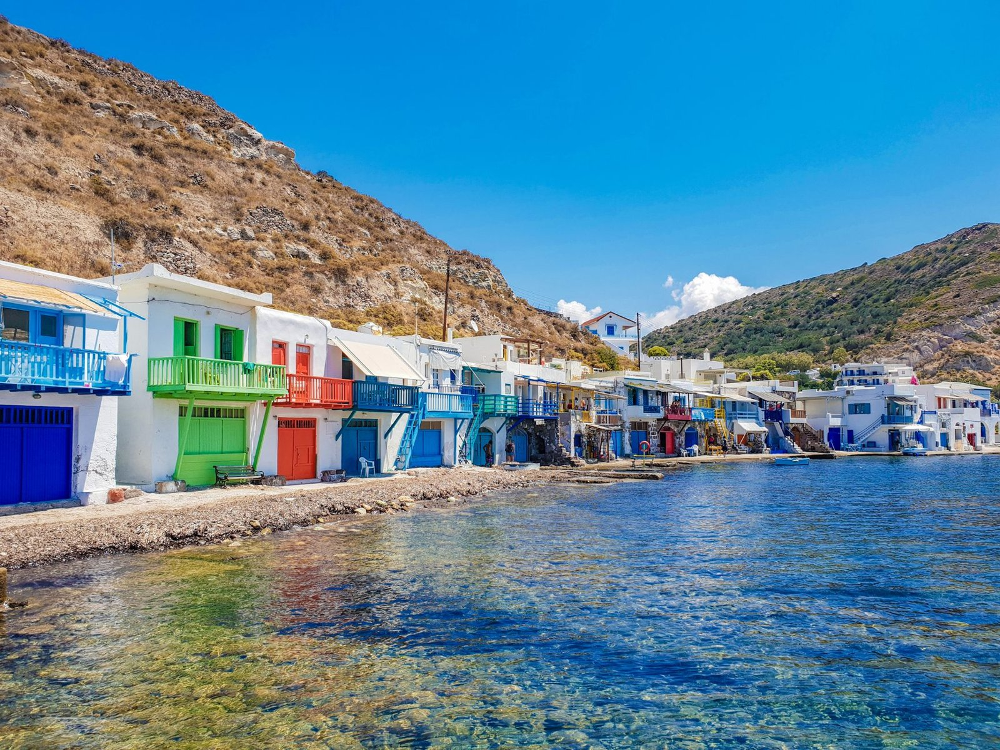

Kythnos sits in the Western Cyclades, close enough to Athens that locals from Lavrio make weekend trips, yet far enough from the tourism circuit that it has kept its working-island character. You will not find boutique hotels lining every beach or sunset cocktail bars competing for your attention. Instead, the island moves to the rhythm of fishing boats returning to Merichas, elderly women in Dryopida sweeping their doorsteps at dawn, and thermal bathers soaking in the springs at Loutra as they have for centuries.
The island is also called Thermia, a name that points directly to those hot springs. While Mykonos and Santorini have become stages for international tourism, kythnos remains a place where Greek families return each summer to the same rented rooms, where tavernas serve whatever the day's catch brought in, and where you might be the only non-Greek speaker at the table. This is not a drawback. It is exactly what makes the island appealing if you want to experience the Cyclades without the performance.
Around 70 beaches scatter across the coastline, from the famous sand spit at Kolona to coves accessible only by boat or on foot. The interior holds two distinct settlements: Chora perched on a ridge with views across the island, and Dryopida tucked into a valley with its cave-like houses and red-tiled roofs. The pace here is slow by design, not by accident.
Ferries arrive at Merichas on the west coast. You have two mainland departure points: Lavrio and Piraeus. Lavrio is closer and faster, piraeus offers more frequent connections.
The fastest crossing takes about 1 hour and 10 minutes, with the average journey around 1 hour and 37 minutes. From June to September, expect roughly 19 weekly crossings. Blue Star Ferries, goutos Lines, triton Ferries, and Karistia operate this route. Lavrio port is about an hour's drive from Athens center, less if you are coming from the airport. The shorter sea crossing makes this the preferred route for many visitors.
Conventional ferries take about 3 hours, while high-speed services cut that to around 1 hour. Zante Ferries runs regular departures. Piraeus is easier to reach by public transport from central Athens, but the longer journey time means you will spend more of your day on the water. If you are island-hopping through the Cyclades, piraeus connections often make more sense for routing.
Local buses connect the main settlements: Merichas to Chora (also called Messaria) to Loutra, and Merichas to Dryopida to Kanala. The schedules are limited and built around local needs rather than tourist convenience. Check current times when you arrive, as they shift between seasons.
Taxis operate on the island but are few. In summer, you may need to call ahead rather than expect to hail one on the street. Water taxis run between beaches and settlements along the coast, a practical option if you want to reach coves without road access.
Renting a car or scooter gives you real freedom to explore. Many roads remain unpaved, especially those leading to remote beaches. A scooter works fine for most routes, but a car offers more comfort on rougher tracks and protection from the meltemi winds that blow through in August. Book vehicles in advance during July and August, as the island's rental fleet is small.
The main town sits inland on a hilltop, a 15-minute drive from Merichas. White-washed houses line narrow streets, with churches and small squares breaking up the maze. Staying here puts you in the island's social center, where locals gather in the evening at cafes and tavernas. You will need transport to reach beaches, but you gain proximity to shops, bakeries, and the rhythm of daily island life.
This traditional village hides in a valley, its architecture distinct from typical Cycladic style. Houses built into the hillside create a layered effect, with red-tiled roofs instead of the usual white cubes. The village is quiet, almost solemn, with a slower pace than Chora. Staying here suits visitors who want to experience a more inward-looking side of the island, though you will be further from beaches and port connections.
The port village is the liveliest spot on Kythnos, with tavernas along the waterfront, minimarkets, and a functional energy that comes from being the arrival point for all ferries. The beach at Martinakia sits within walking distance. Merichas works well as a base if you want easy access to transport, food options, and a bit of evening activity without needing to drive after dinner.
The northern settlement built around thermal springs attracts visitors seeking the spa experience. The village is small and purpose-built for bathers, with a handful of tavernas and rooms to rent. Staying here makes sense if the hot springs are your primary interest, but you will find fewer dining options and a quieter atmosphere than Merichas or Chora.
May to October defines the practical season. May and June bring warm weather without crowds, wildflowers across the hills, and water still cool but swimmable. September and early October offer similar conditions, with warmer sea temperatures and the relaxed feeling that comes after peak season ends.
July and August are peak months. Greek families fill many accommodations, tavernas get busy, and beaches see their highest numbers. The meltemi wind blows strong some days, keeping temperatures bearable but making some beaches less pleasant. If you visit in peak season, book accommodation well ahead and expect a livelier, more social atmosphere.
Outside May to October, many businesses close, ferry schedules thin out, and the island returns to its winter self. A few tavernas and shops stay open for locals, but tourism infrastructure largely shuts down.
Tavernas on Kythnos serve straightforward Greek food with an emphasis on fish and seafood. Menus change based on what fishermen bring in, so the grilled catch of the day is usually your best choice. Local cheeses, capers, and honey appear on tables, products from the island's small-scale agriculture.
In Chora and Dryopida, bakeries sell traditional sweets and breads. The phyllo pies filled with local greens or cheese make a good breakfast or midday snack. Kafeneia in village squares serve Greek coffee and cold beer, places where older men gather to talk and play cards.
The food is not refined or inventive. It is the cooking of people feeding their families and neighbors, which means it relies on quality ingredients prepared simply. Portions are generous, prices are reasonable compared to more touristed islands, and the atmosphere in most places is casual and welcoming without being performative about it.
Evening life centers on eating and drinking rather than bars or clubs. After dinner, locals and visitors stroll through Chora's streets or sit at waterfront cafes in Merichas. The pace is gentle, conversations stretch long, and by midnight most places have closed. This is an island where you go to bed at reasonable hours and wake to morning light on the water.

